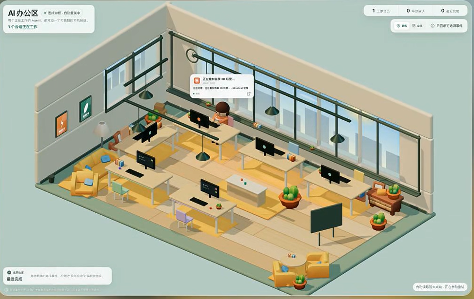

你的 AI 员工在干什么？
这间「AI 办公区」让进度一眼可见
把多个 Agent 的工位、进度、提醒和人工确认，集中到一块所有人都能看懂的管理屏。
引子
你把代码重构交给 Claude，把问题排查交给 Codex，又让另一个 Agent 整理文档。
任务都安排出去了，但人并没有真正离开：一会儿切回终端看日志，一会儿检查权限弹窗，一会儿确认某个任务到底是还在运行，还是早已停在那里等你。
当 Agent 从一个变成多个，新的问题出现了：AI 会干活，但你缺少一块能管理它们的屏幕。
AI 办公区，就是为这个问题准备的。
它把分散在 Claude、Codex、终端和编辑器里的运行状态，集中到一间可视化办公室里。每个 Agent 有自己的工位；谁在工作、正在做什么、谁已经完成、谁需要你确认，一眼就能看懂。
这不是给 AI 换一层好看的皮肤，而是给多 Agent 工作流补上一块真正可用的管理界面：可观察、可提醒、可介入。

AI 办公区：工位对应 Agent，气泡显示实时任务状态。
01
PART
一眼看懂 AI 办公区
PRODUCT · 一屏掌握所有 Agent
办公室里的每个角色，都对应一个正在运行的 Agent 会话。
Agent 开始任务，角色进入工位；读取文件、修改代码或执行命令时，工位上方出现实时状态；任务完成或需要人工决定时，界面会给出提醒。你不必先读完整日志，只看办公室，就知道注意力应该放在哪里。
02
PART
四个核心功能，把后台工作搬到眼前
FEATURES · 从运行到交付
01 一个 Agent，一个工位
Claude、Codex 或其他接入的 Agent，不再只是散落在不同窗口里的会话。每个任务都有清楚的视觉位置，不用再凭记忆判断“哪个窗口对应哪个任务”。
02 状态气泡，实时告诉你它在做什么
“正在运行”远远不够。真正有用的信息是：它在读文件、写代码、执行命令，还是等待外部结果。
AI 办公区把这些动作显示在角色上方，方便快速确认执行方向，发现某个 Agent 是否停滞。
03 完成主动提醒，不用反复追问
任务结束后，系统给出显眼的完成状态。人不再轮流打开每个窗口问“做完了吗”，监督方式从“不断巡检”变成“等待明确提醒”。
04 需要决定时，再把人叫回来
涉及权限、不确定修改或高影响操作时，可靠的 Agent 不应该默默继续，而应该停下来等待确认。
AI 办公区把这类待处理事件从终端深处抬到界面上，让人更快发现真正需要拍板的节点。
03
PART
为什么它不只是一款“解压桌宠”
VALUE · 管理注意力，而不是增加窗口
像素办公室的第一印象很轻松，但它的实际价值非常具体。
第一，减少无意义的窗口巡检。 你可以先看总览，再决定是否进入具体日志。只有异常、完成和确认值得打断注意力。
第二，让团队协作更容易对齐。 谁在处理哪项任务、推进到哪里，都能通过同一张界面沟通。
第三，让 Agent 能力更容易被客户看见。 终端日志不适合演示。AI 办公区把后台执行变成客户一眼能理解的工作场景：任务已分配，Agent 正在推进，关键节点由人确认。
它不承诺让模型突然变聪明，而是让已经能工作的 Agent 更容易管理、更容易展示。
04
PART
三类人，最适合先用起来
SCENARIO · 从个人到团队
个人开发者与独立创造者
如果你经常同时打开 Claude、Codex、编辑器和终端，AI 办公区可以成为副屏上的总控台。偶尔扫一眼，就知道哪些任务仍在推进。
AI 原生团队
当团队用多个 Agent 分担开发、研究、文档和测试，管理难点会转向“怎样同时监督多条执行链”。办公室视图可以成为团队态势面板。
产品演示、培训与客户沟通
如果你需要向不熟悉终端的人解释 Agent 如何工作，这种界面比长日志更有效。工位代表会话，气泡代表动作，客户不必理解底层命令，也能看懂工作流。
05
PART
它不会替代 Agent，但会让 Agent 更好管理
BOUNDARY · 先把期待放对
AI 办公区不是新的大模型，也不会直接提升代码质量、研究准确性或任务成功率。
它提供的是运行状态的可视化与提醒层。真正执行任务的，仍然是底层 Agent；结果是否可靠，仍然需要测试、审阅和必要的人工确认。
不同项目分支和版本的支持范围也可能不同。部分公开方案以 Claude Code 为主，对 Codex 提供基础支持。部署前，需要确认自己的 Agent、环境和工作流是否能够接入。
如果你只偶尔运行一个短任务，现有终端已经足够。但如果你经常同时运行两个以上 Agent、错过提醒，或需要展示执行过程，它的价值会很直观。
06
PART
先让两个 Agent 同时开工
TRY · 用一次真实任务决定
体验 AI 办公区，不需要一开始就搭建一支庞大的“AI 团队”。
选两个真实任务：让一个 Agent 修改代码，让另一个整理资料。完整观察一次从开始、执行、完成到人工确认的过程。
只检查三件事：
01状态是否与真实动作一致；
02完成和待确认提醒是否足够及时；
03你是否因此减少了反复切回终端的次数。
如果答案是肯定的，它就不再是一张动态壁纸，而是一块能进入日常工作的多 Agent 管理屏。
如果你也想给自己的 Claude、Codex 或 Agent 工作流搭一间 AI 办公区，欢迎在后台回复「办公区」，或直接联系我们。
我们可以一起确认：你的环境适合接入哪些 Agent、哪些状态最值得可视化，以及怎样从一个小规模任务开始体验。
让 AI 继续在后台推进，让人只在关键节点出现。
这就是 AI 办公区想解决的问题。
想让你的 Agent 进入 AI 办公区？
后台回复「办公区」，咨询体验、接入与部署。